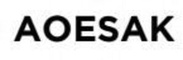

Trade Mark Journal No.2026/006 6 February 2026
WO0000001897746 (3,4,5,20,21,24,25,27,35)
Office of origin: Republic of Korea
Date of International Registration:18 July 2025
Date of designation in the UK:
18 July 2025

- Class 3
- Body wash; shampoos; facial soaps; facial washes; hand soap; perfumed soaps; hand cream; body lotion; body oils; body creams; scented body sprays; aromatic oils for household purposes; scented room sprays; scented linen sprays; room fragrancing preparations; aromatics for outdoor use; fabric softeners for laundry use; non-medicated mouthwashes and gargles.
- Class 4
- Perfumed candles; soy candles; aromatic candles; candles.
- Class 5
- Deodorizing preparations for household, commercial or industrial use; air deodorising preparations; deodorants for textiles; shoe deodorizers.
- Class 20
- Cushions in the nature of furniture; mattress cushions; pillows; bedding, except linen; cushions.
- Class 21
- Liquid soap dispensing bottles; wall-mounted soap dishes; wall soap dishes; soap brackets; dishes for soap; rails and rings for towels; bathroom pails; soap dishes; tissue box covers; toilet tissue holders; toilet paper holders.
- Class 24
- Household linen; covers for mattresses; bath linen; bath towels; lap rugs; pillow covers; beach towels; reversible blankets (term considered too vague by the International Bureau pursuant to Rule 13 (2) (b) of the Regulations); Korean-style duvets; fitted bed sheets and bed covers; quilts; quilt covers; towels [of textile]; bed spreads; bed blankets; bed sheets; bed linen; bed quilts; mattress covers; bed covers; covers for cushions.
- Class 25
- Night gowns; caps being headwear; slippers; footwear; clothing; pajamas; dressing gowns; lingerie; bath robes; brassieres; under garments; scarfs; evening gowns; gloves including those made of skin, hide or fur; maillots; panties, shorts and briefs.
- Class 27
- Rubber mats; rugs; floor coverings; carpets.
- Class 35
- Wholesale store services featuring night gowns; retail store services featuring night gowns; wholesale store services featuring dressing gowns; retail store services featuring dressing gowns; wholesale store services featuring rugs; retail store services featuring rugs; wholesale store services featuring bath robes; retail store services featuring bath robes; wholesale store services featuring undergarments; retail store services featuring undergarments; wholesale store services featuring scarfs; retail store services featuring scarfs; wholesale store services featuring gloves as clothing; retail store services featuring gloves as clothing; wholesale store services featuring gloves including those made of skin, hide or fur; retail store services featuring gloves including those made of skin, hide or fur; wholesale store services featuring carpets; retail store services featuring carpets; wholesale store services featuring non-medicated mouthwashes and gargles; retail store services featuring non-medicated mouthwashes and gargles; supermarkets; wholesale store services featuring air fragrancing preparations; retail store services featuring air fragrancing preparations; wholesale store services featuring room fragrances; retail store services featuring room fragrances; wholesale store services featuring hand cream; retail store services featuring hand cream; wholesale store services featuring body wash; retail store services featuring body wash; wholesale store services featuring household deodorants; retail store services featuring household deodorants; wholesale store services featuring fabric deodorizers; retail store services featuring fabric deodorizers; wholesale store services featuring deodorizing preparations for household, commercial or industrial use; retail store services featuring deodorizing preparations for household, commercial or industrial use.
FIVE SPACE CO., LTD